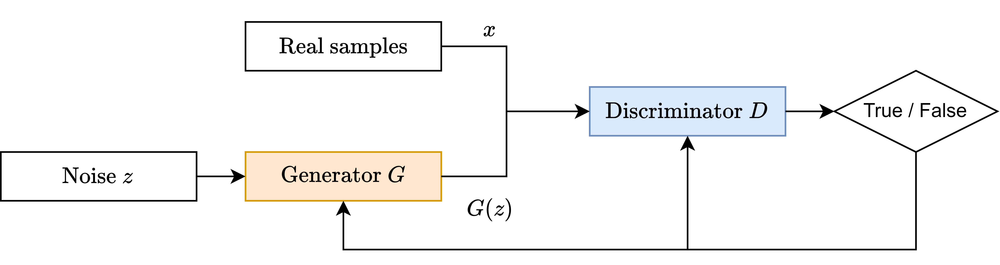
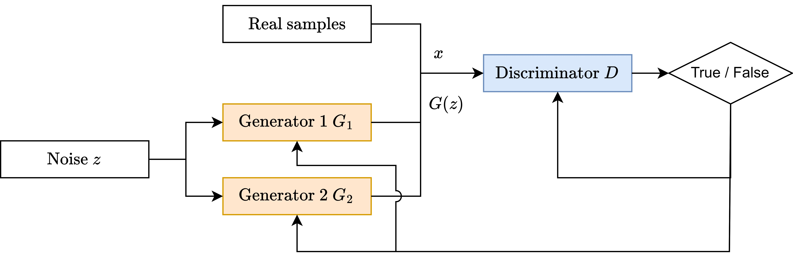

Tutorial 3.1: Getting started with GANs


In tutorial 2.2, we explored the Variational Autoencoder (VAE), a type of generative model. Another, fundamentally different architecture used for data generation is the Generative Adversarial Network (GAN), which consists of two competing neural networks, each with its own objective.
A Generator network creates new samples, aiming to produce data indistinguishable from real data. A Discriminator network aims to correctly classify samples as either real or synthetically generated by the Generator. This setup creates a competitive, adversarial dynamic.
This adversarial training setup has dual-use applications in cybersecurity: it can be used to train highly sophisticated detector networks for Intrusion Detection Systems (IDS), or, conversely, to train ‘smart’ generators capable of creating evasive attack samples that bypass machine learning-driven IDSs. In this tutorial, we will learn how to implement and train a simple GAN in PyTorch.
Tutorial Objectives
By the end of this tutorial, you will be able to:
Explain the core architecture and adversarial objective of a Generative Adversarial Network (GAN).
Implement the Generator and Discriminator neural networks in PyTorch.
Train a simple GAN to generate synthetic data.
Game Theory and Generative Adversarial Networks (GANs)
Generative Adversarial Networks (GANs) represent a game between two neural networks trained in an adversarial manner to reach a zero-sum Nash equilibrium profile. In this setup, the Generator and Discriminator are engaged in a competitive minimax game, striving to outmaneuver each other.
Basics of GANs in Terms of Game Theory
GANs can be understood as a zero-sum, two-player minimax game, where the two players are the Generator \(G(z)\) and the Discriminator \(D(x)\).

Players
Generator :math:`G(z; theta_G)`: The generator takes a random noise vector \(z\), sampled from a prior noise distribution \(p_z(z)\) (usually uniform or Gaussian), and maps it to approximate the training data distribution \(p_g(x)\). The goal of \(G\) is to generate samples indistinguishable from the real data distribution \(p_{\text{data}}(x)\).
Discriminator :math:`D(x; theta_D)`: The discriminator takes an input \(x\) (either a real sample from \(p_{\text{data}}(x)\) or a fake sample from the generator \(G\)) and outputs a probability \(D(x)\) in the range \([0, 1]\), representing its confidence that \(x\) is a real sample.
Objective
The GAN framework’s objective is to find the Nash equilibrium of the following minimax game:
Different choices for the functions \(\log D(x)\) and \(\log(1 - D(G(z)))\) lead to variations in GAN objectives and metrics (e.g., WGAN, LSGAN).
Variant | f0(D) | f1(D) | Divergence Metric | Game Value | Description |
|---|---|---|---|---|---|
Vanilla GAN | log D | log(1 - D) | Jensen-Shannon Divergence (JSD) |
|
The original formulation by Goodfellow et al. uses cross-entropy loss for adversarial dynamics.
Wasserstein GAN (WGAN): Uses the Earth Mover’s distance for stable gradient flow and improved convergence.
Hinge GAN: Uses the Hinge Loss and encourages a margin between correct and incorrect classifications.
Detailed Objectives
Discriminator’s Objective
The discriminator \(D\) seeks to maximize its ability to distinguish real samples (\(x\)) from fake samples (\(G(z)\)):
Generator’s Objective
The generator \(G\) seeks to minimize the discriminator’s ability to correctly classify fake samples as generated:
Minimax Game Interpretation
The GAN framework models a zero-sum game where the generator \(G\) and the discriminator \(D\) compete.
The generator \(G\) aims to create samples that are indistinguishable from real data.
The discriminator \(D\) aims to accurately classify samples as real or generated.
The Nash equilibrium is reached when \(p_g = p_{\text{data}}\) and the discriminator is unable to distinguish the two distributions, resulting in:
Optimality
The optimal discriminator \(D^*\) and generator \(G^*\) satisfy:
and
At this point, the generator perfectly replicates the real data distribution, and the discriminator cannot distinguish between real and generated samples. This game-theoretic foundation not only explains the dynamics of GANs but also highlights their flexibility for various tasks, from image synthesis to adversarial data generation.
2. Implementation of a Simple Vanilla GAN in PyTorch
We will implement a simple Vanilla GAN to generate 2D data points that follow a multimodal Gaussian distribution (two distinct clusters).
We define the Generator and Discriminator as simple Multi-Layer Perceptrons (MLPs). The generate_real_data function simulates a real-world dataset with two distinct clusters.
[47]:
# Import necessary libraries
import torch
import torch.nn as nn
import torch.optim as optim
import numpy as np
import matplotlib.pyplot as plt
# Define the Generator model
class Generator(nn.Module):
def __init__(self):
super(Generator, self).__init__()
# Input dimension is 10 (noise), output dimension is 2 (for 2D data)
self.fc = nn.Sequential(
nn.Linear(10, 50),
nn.ReLU(),
nn.Linear(50, 2)
)
def forward(self, x):
return self.fc(x)
# Define the Discriminator model
class Discriminator(nn.Module):
def __init__(self):
super(Discriminator, self).__init__()
# Input dimension is 2 (for 2D data), output dimension is 1 (binary classification)
self.fc = nn.Sequential(
nn.Linear(2, 50),
nn.ReLU(),
nn.Linear(50, 1),
nn.Sigmoid() # Sigmoid activation to output probabilities
)
def forward(self, x):
return self.fc(x)
# Toy dataset with multimodal Gaussian distribution (two clusters)
def generate_real_data(batch_size=64, mean1=0.0, mean2=10.0, std=1.0):
# Half of the samples from mean1
half_batch = batch_size // 2
data1 = np.random.normal(mean1, std, (half_batch, 2))
# Half of the samples from mean2
data2 = np.random.normal(mean2, std, (batch_size - half_batch, 2))
# Combine both parts
combined_data = np.vstack([data1, data2])
# Convert to torch tensor
return torch.tensor(combined_data, dtype=torch.float32)
# Function to generate noise vector for the Generator
def generate_noise(batch_size=64, noise_dim=10):
return torch.tensor(np.random.randn(batch_size, noise_dim), dtype=torch.float32)
We initialize the models, the Binary Cross-Entropy (BCE) loss function, and the Adam optimizers for both the Generator (\(G\)) and the Discriminator (\(D\)).
[48]:
# Initialization
generator = Generator()
discriminator = Discriminator()
criterion = nn.BCELoss() # Standard loss for Vanilla GAN
optimizer_g = optim.Adam(generator.parameters(), lr=0.001)
optimizer_d = optim.Adam(discriminator.parameters(), lr=0.001)
# Training parameters
num_epochs = 10000
batch_size = 64
noise_dim = 10
losses_d = []
losses_g = []
he core of the GAN training involves alternating updates: first, updating the Discriminator (\(D\)) to correctly classify real and fake samples, and second, updating the Generator (\(G\)) to fool the Discriminator.
[49]:
# Training loop
for epoch in range(num_epochs):
# --- 1. Train Discriminator ---
optimizer_d.zero_grad()
# Generate real and fake data
real_data = generate_real_data(batch_size)
# Detach fake data to prevent gradients from flowing back to the Generator
fake_data = generator(generate_noise(batch_size, noise_dim)).detach()
# D Loss on REAL data (target: 1)
real_labels = torch.ones(batch_size, 1)
output_real = discriminator(real_data)
loss_d_real = criterion(output_real, real_labels)
# D Loss on FAKE data (target: 0)
fake_labels = torch.zeros(batch_size, 1)
output_fake = discriminator(fake_data)
loss_d_fake = criterion(output_fake, fake_labels)
# Total loss and update Discriminator
loss_d = loss_d_real + loss_d_fake
loss_d.backward()
optimizer_d.step()
# --- 2. Train Generator ---
optimizer_g.zero_grad()
# Generate new fake data (not detached)
fake_data = generator(generate_noise(batch_size, noise_dim))
# G Loss (target: 1 -> Generator tries to fool D into thinking fake data is real)
real_labels = torch.ones(batch_size, 1)
output_fake = discriminator(fake_data)
loss_g = criterion(output_fake, real_labels)
# Update Generator
loss_g.backward()
optimizer_g.step()
# Save losses and print progress
losses_d.append(loss_d.item())
losses_g.append(loss_g.item())
if epoch % 1000 == 0:
print(f'Epoch [{epoch}/{num_epochs}], Loss D: {loss_d.item():.4f}, Loss G: {loss_g.item():.4f}')
Epoch [0/10000], Loss D: 1.2968, Loss G: 0.6921
Epoch [1000/10000], Loss D: 1.0259, Loss G: 1.0188
Epoch [2000/10000], Loss D: 1.1326, Loss G: 0.9894
Epoch [3000/10000], Loss D: 1.2661, Loss G: 0.9625
Epoch [4000/10000], Loss D: 1.0694, Loss G: 0.8701
Epoch [5000/10000], Loss D: 1.1099, Loss G: 1.1393
Epoch [6000/10000], Loss D: 0.9998, Loss G: 0.9766
Epoch [7000/10000], Loss D: 1.0572, Loss G: 1.0982
Epoch [8000/10000], Loss D: 0.9741, Loss G: 1.0837
Epoch [9000/10000], Loss D: 0.9720, Loss G: 1.0960
We visualize the training progress by plotting the Generator and Discriminator losses and then compare the generated data against the real data distribution.
[50]:
# Plot the losses
plt.figure(figsize=(12, 6))
plt.plot(losses_d, label='Discriminator Loss', color='red')
plt.plot(losses_g, label='Generator Loss', color='blue')
plt.xlabel('Epoch')
plt.ylabel('Loss')
plt.title('Losses Over Epochs')
plt.legend()
plt.grid(True)
plt.show()

Note: Interpreting Oscillating Losses
The Generator and Discriminator losses in the plot are oscillating rather than smoothly decreasing. This instability is typical for GANs because training seeks a dynamic Nash equilibrium where neither network can unilaterally improve. This characteristic makes the training of GANs unstable and challenging.
[51]:
# Plot results
with torch.no_grad():
noise = generate_noise(100, noise_dim)
generated_data = generator(noise).numpy()
# Note: generate_real_data() is called again to get fresh real data for the plot
plt.scatter(generated_data[:, 0], generated_data[:, 1], c='blue', label='Generated Data', alpha=0.6)
plt.scatter(generate_real_data(100).numpy()[:, 0], generate_real_data(100).numpy()[:, 1], c='red', label='Real Data', alpha=0.6)
plt.legend()
plt.title('Generated Data vs Real Data (After Training)')
plt.show()

Advanced GAN Training: Multi-Agent Diverse GAN (MAD-GAN) Setup
While the Vanilla GAN provides a strong foundation, its training is often unstable and prone to mode collapse (where the generator only learns to produce a small subset of the data distribution). Game theory offers solutions to these issues by adapting the adversarial dynamics. In this section, we implement a Multi-Agent GAN (MAD-GAN) setup using two competing generators to visualize how multi-generator dynamics can increase training stability and improve output diversity.
Game theory provides a natural framework for analyzing and improving the training and performance of GANs, tackling challenges such as instability, non-convergence, and mode collapse.
Multi-Agent Games: MAD-GANs leverage game-theoretic principles to employ multiple generators and a single discriminator. By having multiple generators compete to cover the data distribution, the architecture explicitly addresses mode collapse, ensuring diverse output generation.
Stochastic Games: Casts GAN training as a Stochastic Nash Equilibrium Problem (SNEP) to improve convergence and stability in non-convex loss landscapes.
Architectural Modifications: These multi-agent architectures often integrate concepts like Nash equilibria for enhanced training dynamics.
The training loss in this multi-agent setup will show complex interactions as the generators compete for coverage while the discriminator tries to learn the boundaries of both. 
We reuse the basic MLP structure but define two separate Generator instances (\(G_1\) and G_2) to handle the multi-agent competition.
[52]:
# Import necessary libraries (Assuming already done)
# import torch
# import torch.nn as nn
# import torch.optim as optim
# import numpy as np
# import matplotlib.pyplot as plt
# Define the Generator model (reused from Step 1)
class Generator(nn.Module):
def __init__(self, input_dim, output_dim):
super(Generator, self).__init__()
self.fc = nn.Sequential(
nn.Linear(input_dim, 50),
nn.ReLU(),
nn.Linear(50, output_dim)
)
def forward(self, x):
return self.fc(x)
# Define the Discriminator model (reused from Step 1)
class Discriminator(nn.Module):
def __init__(self, input_dim):
super(Discriminator, self).__init__()
self.fc = nn.Sequential(
nn.Linear(input_dim, 50),
nn.ReLU(),
nn.Linear(50, 1),
nn.Sigmoid()
)
def forward(self, x):
return self.fc(x)
We initialize two distinct Generators (G_1 and G_2) and their respective optimizers. The utility functions generate_real_data and generate_noise from Step 1 are reused.
[53]:
# Initialization
input_dim = 10 # Dimension of noise vector
output_dim = 2 # Dimension of generated data (2D)
generator_1 = Generator(input_dim, output_dim)
generator_2 = Generator(input_dim, output_dim)
discriminator = Discriminator(output_dim)
criterion = nn.BCELoss()
# Optimizers for all three agents
optimizer_g1 = optim.Adam(generator_1.parameters(), lr=0.001)
optimizer_g2 = optim.Adam(generator_2.parameters(), lr=0.001)
optimizer_d = optim.Adam(discriminator.parameters(), lr=0.001)
# Training parameters
num_epochs = 10000
batch_size = 64
losses_d = []
losses_g1 = []
losses_g2 = []
The training involves sequential updates for the three agents: the Discriminator updates its weights based on both fake distributions, followed by separate updates for Generator 1 and Generator 2.
[54]:
# Training loop
for epoch in range(num_epochs):
# --- 1. Train Discriminator (D) ---
optimizer_d.zero_grad()
# Generate data from both generators
noise = generate_noise(batch_size)
fake_data_1 = generator_1(noise)
# Detach G2 data: ensures D update uses fixed G2 parameters for this step
fake_data_2 = generator_2(noise).detach()
# D Loss on REAL data (target: 1)
real_data = generate_real_data(batch_size)
real_labels = torch.ones(batch_size, 1)
loss_d_real = criterion(discriminator(real_data), real_labels)
# D Loss on FAKE data (target: 0) - Must correctly classify both fake batches
fake_labels = torch.zeros(batch_size, 1)
loss_d_fake = criterion(discriminator(fake_data_1), fake_labels) + \
criterion(discriminator(fake_data_2), fake_labels)
# Total loss and update Discriminator
loss_d = loss_d_real + loss_d_fake
loss_d.backward()
optimizer_d.step()
# --- 2. Train Generator 1 (G1) ---
optimizer_g1.zero_grad()
fake_data_1 = generator_1(generate_noise(batch_size))
# G1 Goal: Fool D (target: 1)
loss_g1 = criterion(discriminator(fake_data_1), torch.ones(batch_size, 1))
loss_g1.backward()
optimizer_g1.step()
# --- 3. Train Generator 2 (G2) ---
optimizer_g2.zero_grad()
fake_data_2 = generator_2(generate_noise(batch_size))
# G2 Goal: Fool D (target: 1)
loss_g2 = criterion(discriminator(fake_data_2), torch.ones(batch_size, 1))
loss_g2.backward()
optimizer_g2.step()
losses_d.append(loss_d.item())
losses_g1.append(loss_g1.item())
losses_g2.append(loss_g2.item())
# Print progress
if epoch % 1000 == 0:
print(f'Epoch [{epoch}/{num_epochs}], Loss D: {loss_d.item():.4f}, Loss G1: {loss_g1.item():.4f}, Loss G2: {loss_g2.item():.4f}')
Epoch [0/10000], Loss D: 1.8612, Loss G1: 0.7356, Loss G2: 0.7411
Epoch [1000/10000], Loss D: 1.6788, Loss G1: 1.3444, Loss G2: 1.8081
Epoch [2000/10000], Loss D: 1.6341, Loss G1: 1.3213, Loss G2: 1.3940
Epoch [3000/10000], Loss D: 2.0834, Loss G1: 1.2398, Loss G2: 1.0139
Epoch [4000/10000], Loss D: 1.9598, Loss G1: 1.0444, Loss G2: 1.2470
Epoch [5000/10000], Loss D: 2.0909, Loss G1: 1.0635, Loss G2: 1.1336
Epoch [6000/10000], Loss D: 2.1890, Loss G1: 1.0704, Loss G2: 0.9022
Epoch [7000/10000], Loss D: 1.7165, Loss G1: 1.3017, Loss G2: 1.2994
Epoch [8000/10000], Loss D: 1.8354, Loss G1: 1.2654, Loss G2: 1.1022
Epoch [9000/10000], Loss D: 1.9087, Loss G1: 1.1363, Loss G2: 1.2568
We visualize the losses, noting the three competing loss curves, and plot the generated data to see if the multi-agent setup resulted in better coverage of the two real data clusters.
[55]:
# Plot the losses
plt.figure(figsize=(12, 6))
plt.plot(losses_d, label='Discriminator Loss', color='red')
plt.plot(losses_g1, label='Generator 1 Loss', color='blue')
plt.plot(losses_g2, label='Generator 2 Loss', color='green')
plt.xlabel('Epoch')
plt.ylabel('Loss')
plt.title('Losses Over Epochs (Multi-Agent GAN)')
plt.legend()
plt.grid(True)
plt.show()
Note: Multi-Agent Loss Dynamics
The loss curves for the two Generators (\(G_1\) and \(G_2\)) show their independent, yet coupled, struggle against the Discriminator.
Symmetric Loss Components: Due to the symmetric nature of the GAN’s objective, the difficulty for the Discriminator to correctly classify all fake data is the sum of the difficulties posed by \(G_1\)’s output and \(G_2\)’s output.
Competition and Specialization: The generators compete against each other to cover the real data distribution. Ideally, in a Multi-Agent GAN, this competition leads to specialization, where \(G_1\) might focus on one cluster (mode) of the real data, and \(G_2\) on the other, thereby reducing overall mode collapse.
[56]:
# Plot results
with torch.no_grad():
noise = generate_noise(100)
generated_data_1 = generator_1(noise).numpy()
generated_data_2 = generator_2(noise).numpy()
plt.scatter(generated_data_1[:, 0], generated_data_1[:, 1], c='blue', label='Generated by G1', alpha=0.6)
plt.scatter(generated_data_2[:, 0], generated_data_2[:, 1], c='green', label='Generated by G2', alpha=0.6)
plt.scatter(generate_real_data(100).numpy()[:, 0], generate_real_data(100).numpy()[:, 1], c='red', label='Real Data', alpha=0.6)
plt.legend()
plt.title('Generated Data by G1 and G2 vs Real Data (After Training)')
plt.show()

Conclusion
 If you found this tutorial helpful, please ⭐ star our repository to show your support.
If you found this tutorial helpful, please ⭐ star our repository to show your support. For any questions, typos, or bugs, kindly open an issue on GitHub — we appreciate your feedback!
For any questions, typos, or bugs, kindly open an issue on GitHub — we appreciate your feedback!